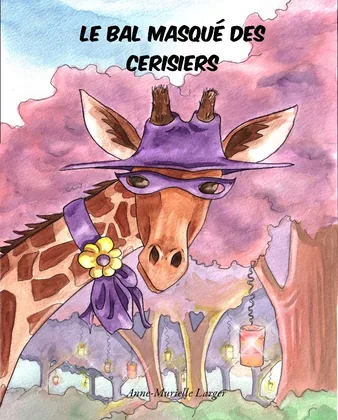
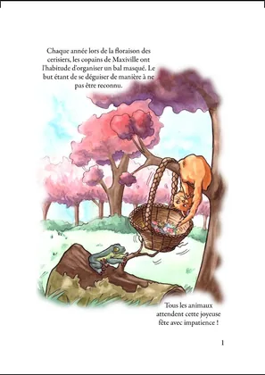
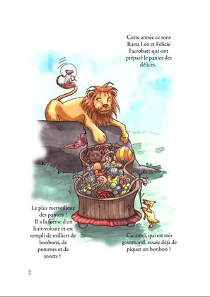
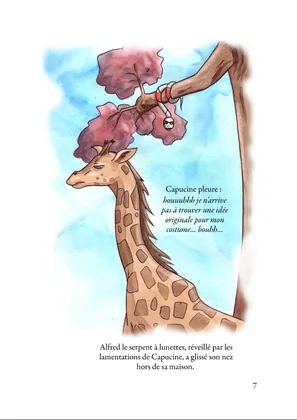
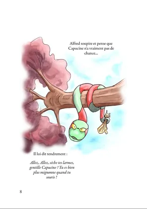
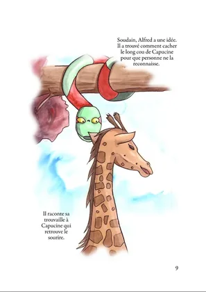
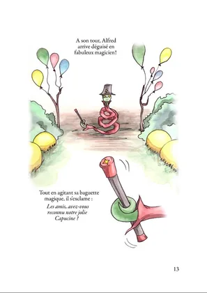
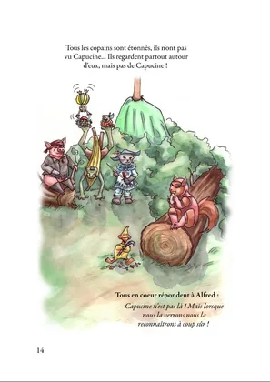
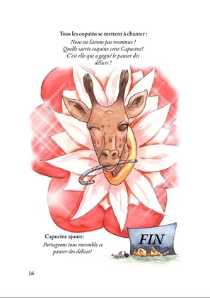
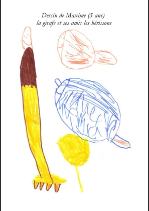

AML Creation › Namea Les créations de Namea · Anne
Le bal masqué des cerisiers, lecture en ligne Lisez Le bal masqué des cerisiers, l’album illustré à l’aquarelle de Namea. Capucine la girafe et ses amis préparent un grand bal à Maxiville.
19 images · Touchez une image pour l’agrandir.

Le bal masqué des cerisiers - couverture 
Le bal masqué des cerisiers - page 1 
Le bal masqué des cerisiers - page 2 Le bal masqué des cerisiers - page 3 Le bal masqué des cerisiers - page 4 Le bal masqué des cerisiers - page 5 Le bal masqué des cerisiers - page 6 
Le bal masqué des cerisiers - page 7 
Le bal masqué des cerisiers - page 8 
Le bal masqué des cerisiers - page 9 Le bal masqué des cerisiers - page 10 Le bal masqué des cerisiers - page 11 Le bal masqué des cerisiers - page 12 
Le bal masqué des cerisiers - page 13 
Le bal masqué des cerisiers - page 14 Le bal masqué des cerisiers - page 15 
Le bal masqué des cerisiers - page 16 
Le bal masqué des cerisiers - page 17 Le bal masqué des cerisiers - page 18